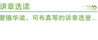
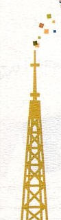

| 圣经资料 | 每日灵粮 | 音乐赞美 | 期刊杂志 | 属灵书籍 | 福音影音 | 福音机构 | 神学教育 | 书房网站 |


圣经资料
每日灵粮
音乐赞美
期刊杂志
属灵书籍
福音影音
福音机构
神学教育
书房网站
| 网路中英圣经 |
网络中英圣经.圣经中英对照, 英文钦定译本, 简易英文译本, 简体中文和合本, 繁体中文和合本.圣经学习工具中英对照, 圣经查询, 查经指南.圣经资源下载圣经, 将《圣经查询》放到您的网页上, 圣经书店指引, 网络圣经指引.... |
| 圣经广播网 | 我们的特色是忠于圣经的教导，并播放4000 多首优美圣乐，我们精心制作各种节目，内容有每日灵修，主日崇拜转播， 空中儿童主日学，普世佳音，开路者，家庭沟通节目，圣经讲坛，有问必答... |
| 圣经灵修版 | 旧约圣经.创世记.出埃及记.利未记.民数记.申命记.约书亚记.士师记.路得记.撒母耳记上....哈巴谷书.西番雅书.哈该书.撒迦利亚书.玛拉基书.新约圣经.马太福音.马可福音.路加福音.约翰福音.使徒行传.罗马书.... |
| 圣经知识库 |
圣经简介.信息.圣经百问.主日讲章.圣经人物.圣经佳言.赫苏斯的比喻.真情告白.赫苏斯的教训.前人脚踪.赫苏斯的预言.随时的帮助.卢牧师-圣经研经园地.您的响应. |
| 传基督圣经网页 | 传基督圣经网页关于基督教圣经查阅和圣经知识的网站。 |
| 信望爱查经资料 | ‧聖經查經資料‧基督教信仰‧回首來時 真實見證 主題討論‧信 仰 比 較 |
| 中英文圣经朗读 | 感谢主临万邦提供普通话圣经朗读的下载链接Specialthankstobibleonstage.orgforitsfreecopyoftheaudioBible.Godblessyourservice. |
| 基督教武林英雄帖 | 诗歌智慧书...基督教机构教牧资源，福音布道，福音传媒，福音传播，福音剧团，福音广播，福音机构，中国事工，布道训练，戒毒事工... |
| 线上查经 | 台北灵粮堂网页 |
| 中文圣经检索工具 | 查询句子或词组, 逻辑查询单字... |
| 荒漠甘泉 | 提供《荒漠甘泉》每日篇章在线阅读。 | |
| 大光读经日程 | 大光传播有限公司 | |
| 每日与主同行 | 知信行网上团契 | |
| 每日读经释义 | 知信行网上团契 | |
| 订阅网络天粮灵修电邮资料 | 欢迎使用《网络天粮》电邮订阅服务 | |
| 精彩在今天 |
|
| 小羊诗歌 | 红豆音乐 |
| 以勒工作坊 | 赞美之泉 |
| 赞美网 | 齐唱网 |
| 我敬拜 | 与神同在敬拜网 |
| 诗歌铃声集中地 | 约沙法敬拜团 |
| 敬拜者使团 | 活水网站-赞美诗歌集 |
| ENOCH的音乐天地 | REJOICE主悦舞团 |
| 五饼二鱼 | 基力音乐 |
| 华人教会音乐资讯网 |
| 中信 | 「福音传华民、恩泽遍万邦」是中信传福音的策略，在宣教工场先将福音传给当地华人，然后再传给其他民族。中信于一九六一年创立，当时以文字宣教开始，至今已发展为多元化差会。 |
| 台福通讯 | 台福传播中心隶属于台福基督教会总会，1991年设立于HighlandPark。 我们的异象是透过传播媒体配搭各地教会，对外传扬福音、对内造就信徒。事工着重在文字出版和服务教会，面对廿一世纪多元化社会，更计划扩张触角，经营影音传播，同时训练造就传播人才。 |
| 飞扬 | 汇集社区动讯，扩大接触层面；整合社会资源，嘉惠华人同胞。分享耶稣大爱，温暖骨肉心扉；提升心灵内涵，富化生活情趣。 满足现代人的心灵需求；实践基督信仰于生活中。使用圣经真理导引一般知识，显明一般知识的根源；透过一般知识衬托圣经真理，显扬圣经真理的美丽。 |
| 海外校园 | 引领中国学人信主及各教会福音事工以及布道的刊物。 |
| 生命季刊 | <生命季刊>是在一个异象的引导下办起来的。据有关数据显示，自中国大陆改革开放以来，到海外求学访学、移民定居的大陆人已在百万以上 。我们深信是神把他们---其实是把"我们... |
| 真理报 | 真理报-温哥华华人基督教月报.温哥华基督徒短期宣教训练中心出版. |
| 基督教周报 | 《基督教周报》的宗旨是报导基督教消息；培育基督徒灵性；及宣扬基督教真理。周报内容包括报导教会消息及动态，并定期邀约神学院教授、教会牧师、信徒领袖等撰文，内容包括培灵、分享、研经、神学辩析、信仰生活、时事回应、家庭辅导.......等等。此外，并设公开园地，欢迎投稿，以达编、写、读三向交流的功能，一同见证福音真理。 |
| 天伦乐 | 天伦乐基督教家庭网站...本会乃一非牟利基督教机构，藉著出版家庭杂志《天伦乐》（创刊21年，免费赠阅）及家庭书籍，举办家庭讲座、课程及亲子团，提供免费辅导服务及家庭网站等，服侍万千家庭。 |
| 今日华人教会 | |
| 守望中华 |
四十年前了，那正是中国大地政治运动一个接连一个的年代，那是我们所爱的中国教会被精炼的年代，而神就在那时，对一个在美国留学的青年人发出□的声音： 「耶路撒冷阿，我若忘记你，情愿我的右手忘记技巧。我若不记念你，若不看耶路撒冷过于我所最喜乐的，情愿我的舌头贴于上膛。」~诗篇一三七篇5-6节 二十五年前，《守望中华》出版了，这也实现了这位青年人对主的呼召的回应......... |
| 神学与教会 | <<神学与教会>>....稿约.1.欢迎凡符合本刊发行宗旨的学术论文(以中文为主)、学术演讲稿或书评稿件。2.本刊为半年刊，每年6月和12月出刊，分别于每年4月 15日及10月15日截稿。3.每期刊载的篇数校外论文以三分之一为限。... |
| 香港基督教-时代论坛 | 《时代论坛》创刊时，其角色和使命都十分清晰，它从来就不是市场主导的产物。在无休止的纷争、矛盾和负面的资讯世界中，我们仍旧以单纯的信念，理性的思辩， 以耶稣基督的心为心，用心去报道及评论，并提供互动空间，彼此丰富和劝勉。 |
| 与主同行 |
 |
| 心灵小憩 | 在繁忙的日常生活中我们 都在寻找一个可以帕提亚的地方这里有令人感动的故事也有值得细细咀嚼的文字 欢迎你进入我们的心灵网络替自己的心找个休息的好地方… |
| 雅比斯的祷告 | 《雅比斯的祷告》，透过圣经人物雅比斯在历代志上四章9至10节的祷文，描绘如何藉祈祷求神赐福，拉阔属灵生命的图画。作者亦以此祷文，三十年来日复日、年复年的祷告，生命得以改变。 |
| 中国基督教书刊 | 中国基督教书刊网站为读者提供可自由下载的基督教书籍资料。其使命是继承教会历史上敬虔基督徒的优良传统, 弘扬基督教文化遗产, 传播《圣经》真理。 |
| 基督教图书馆 | 提供线上中文基督徒期刊杂志搜寻现有中文基督教出版期刊/杂志文章，提供文章标题，目前无文章内容(华神图书馆题供)。搜寻现有中文基督教出版书籍文献─包括书籍简介及作者简介(校园出版社题供)最新基督教出版品介绍(此处栏位并未收集于本图书馆) |
| 圣经图书馆 | 图书馆-圣经工具(BIBLETOOLS)CHINAHIGHWAY |
| 福音的桥梁 | 福音的桥梁.你是否相信神的存在呢？或者不相信呢？你是否知道世人都是罪人呢？你是否明白藉着耶稣基督得生的福音呢？ |
| 基督教智库平台 | 基督教智库平台(ThyWords.com)想做到的就是让这些更多、更广大基督徒阅众的需要，能够多一点、好一点的得着满足。相信我们的平台，大家都会觉得很不一样，但会很好用、很值得用；同时可以把这里的一点成果献给我们在天上的父。 |
| 王明道文库精选集 | 王明道先生是中国教会历史上的一代巨人，作为时代的先知，他肩负着一个神圣的使命，就是责备教会的罪恶和斥责假先知背道的言行。从本世纪初叶一直到中叶，他都不遗余力地反对假先知在教会中传播的异端之道——现代派（Modernism）。 |

| 福音影視城 | 影音使团 | 普世佳音 |
| 福音中华 | 恩雨之声 | 希望之声 |
| 良友电台 | 佳音电台 | 环球广播 |
| 好消息卫星电视台 | 远东广播公司 | 福音声带库 |
| 讲道录音资料库 | 基督教福音磁带图书馆 | 救世传播协会 |
| 華人教會網站 |
| 宇宙光 | 角声使团 | 我们的网站 | 台福神学院 |
| 网络基督使团 | 福音傳播中心 | 国际短宣使团 | 中国全备福音网 |
| 复兴华人国际事工 | 中华基督教福音协进会 | 旧金山湾区华人全福会 | 以马内利华人基督徒网路 |
| 中华海外宣教协会 | 天道福音中心 | 世界华人福音事工联络中心 | 台湾世界展望会 |
| 全球祝祷网 | 信望爱全球资讯网 | 活泉网 | 突破 |
| 校园福音团契全球资讯网 | 基督教神学网 | 福音证主协会 | 東門國際福音中心 |
| 中华信义神学院 | 中华信义神学院是一所承继及宣扬因信称义之福音，并为华人教会陶塑十架工人的学院。我们的目标是为造就：对福音有深切认识对时代有敏锐体察对宣教有火热负担对牧养有真实委身的神仆。 |
| 中华福音神学院 |
我們是中華福音神學院, 建校三十多年, 正如使徒保羅所說 「我們有這寶貝放在瓦器裡, 要顯明這莫大的能力是出於神, 不是出於我們。」（哥林多後書四章7節） 我們有許多寶貝, 我們也樂意和更多好朋友分享, 因此, 歡迎你來認識我們, 和我們連絡 我們的電話是：(02)23659151 我們的網站是：www.ces.org.tw 中華福音神學院 地址：100台北市汀州路三段101號 電話：（02）23659151 傳真：（02）23650225 |
| 台南神学院 | 台南神学院历史悠久，首批来台湾的英国基督长老教会宣教师有感于培养本地宣教人才的重要，因此巴克礼牧师（Dr.ThomasBarclay）于一八七六年在台南创校，并担任首任院长，距台湾设教（一八六五年）仅十一年。此后，本院除在第二次世界大战期间被迫停办八年外，一直不断的成长、发展，目前已成为台湾数十所神学院中最具规模者之一。 |
| 台神人网站 | 台神人网站[首页][影像札记][台神族谱][主题网页][台神周报][学生出版][台神作品][团契生活][校友近况][全站目录].首页影像札记台神族谱主题网页台神周报学生出版... |
| 台湾浸信会神学院 | 本院1952年创校迄今，顺服主的大使命，以装备蒙召事主者成为时代的基督工人为宗旨，一本初衷持守这明确的使命办理神学教育。我们的异象是让装备成全的基督工人... |
| 台湾神学院 | 台湾北部的神学教育可追溯到主后一八七二年，当偕□理（马偕，GeorgeLeslieMackay, D.D.）博士来到淡水传教即已开始。最初的十年间，偕□理博士像主耶稣一样，一面巡回布道，一面教导学生，以路边、榕树下、溪旁、海滨、客栈、或地方的礼拜堂作为教室，可称为「逍遥学院」(PeripateticCollege)或「巡回学院」(ItinerantCollege).........主后一九四五年八月十五日中午日本宣布无条件投降，结束了第二次世界大战。台北神学校随即计画复校，并向有关单位申请收回被征用的校舍，同年十月初旬收复原校舍并改称「台湾神学院」。 |
| 改革宗神学院 | 改革宗神学院 ChinaReformedTheologicalSeminary 地址：105台北市松山区南京东路四段75巷30号 电话：02-2718-1110传真：02-2713-1124 网址：www.crts.eduE-mail：crts@crts.edu |
| 宣道会建道神学院 | 本院于1899年创立于广西梧州，创办人为宣道会之西教士高乐弼医生。创校迄今，毕业学生接近三千名，遍布世界各地，为主作工。 |
| 圣光神学院 | 圣光是由内地会宣教士戴德生(HudsonTaylor)之孙子戴永冕牧师于1920年在河南开封接办开封圣经书院。1955年戴永冕牧师夫妇在高雄市火车站附近（现址）成立圣光圣经书院。1964年其子戴绍曾牧师(JamesHudsonTaylorJr.)接任院长。1976年后，历经田养吾、彭超、吕荣辉几任院长和现任院长陈吉松，已发展成台湾数十所神学院中最具规模者之一，且为亚洲神学协会（ATA）所认证的正会员。本院坚信圣经真理，持守圣洁教义的教导与实践，注重普世宣教异象。 |
| 以琳书房 | 亲爱的朋友，无论您来自何方，我们竭诚欢迎您的光临！ 灵食小站是属于每一位访客的心灵补给站，我们盼望透过各种滋润心灵的音乐，图书及礼品，帮助现代人在忙碌中为自己加加油，打打气。如果您希望亲自来到书房翻翻书，听听音乐，和同工们聊聊天，欢迎您在路过洛杉矶时，来看看我们。 |
| 校园书房出版社 | 校园书房出版社 台北市100罗斯福路3段126号3F P.O.Box13-144, Taipei, 100Taiwan, R.O.C. TEL:02-23644001 FAX:02-23680303 |
| 荣主书房 | 本书目包括一百五十余家华人基督教出版社所有产品，书目逾二万，乃中文基督教图书最完整之书房。欢迎采购！ |

{kind=link}